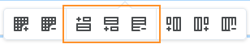

Quick Start Guide: Accordion Component
Below are tips to help you build and customize your Accordion component.
Note: The Accordion component is structured using the Accordion Builder table. Each row of this table represents an accordion, and consists of a corresponding Accordion ID, Accordion Name, and Content.
Adding and deleting accordions
Use the floating table functions menu in the Accordion Builder table to add or delete accordions by adding or deleting rows. This floating menu will appear at the top or bottom when you click anywhere inside the table column or row: 
- Add an accordion before an existing accordion
To add a new accordion before an existing accordion, you will add a row above an existing row: - In the Accordion Builder table, select the entire row that corresponds to the accordion that you want to come after the new accordion.
- Locate the floating table functions menu. Once the row has been selected, this menu should appear either at the top or bottom of the row.
- Select the icon that has the plus sign at the top left to add the new row.
- Add an accordion after an existing accordion
To add a new accordion after an existing accordion, you will add a row below an existing row: - In the Accordion Builder table, select the entire row that corresponds to the accordion that you want to come before the new accordion.
- Locate the floating table functions menu. Once the row has been selected, this menu should appear either at the top or bottom of the row.
- Select the icon that has the plus sign at the bottom left to add the new row.
- Delete an existing accordion
To delete an existing accordion, you will delete an existing row: - In the Accordion Builder table, select the entire row that corresponds to the accordion that you want to delete.
- Locate the floating table functions menu. Once the row has been selected, this menu should appear either at the top or bottom of the row.
- Select the icon that has the minus sign at the bottom right to delete the row.

Adding content to an accordion
Once an accordion row has been added, fill in the following fields:
Field |
Description |
|---|---|
Accordion ID |
Choose a unique identifier ID for the accordion. Avoid having spaces in the identifier ID. Underscores and hyphens can be used to stitch multiple words together. You can also leave this field blank and let the builder choose an ID for you. |
Accordion Name |
This is the text that appears at the top of the accordion. |
Accordion Contents |
This is the content that you want to present within the accordion. |
A few helpful hints:
- You can undo by using the keyboard shortcut [PC: Ctrl + z] or [Mac: Cmd + z].
- If undo does not work, click the “Cancel” button to discard any unwanted or accidental changes.
- Pro Tip : If you want to paste text from other sources, use the keyboard shortcut [PC: Shift + Ctrl + v] or [Mac: Shift + Cmd + v] to paste without source formatting.
Copying, moving or deleting the Accordion component
The Accordion component can be copied, moved or deleted through the following steps:
- Scroll up to the “Information Card” section, near the top of the component.
- Select the component by clicking anywhere in the “Information Card” area. A light blue highlight will appear around the component.
- Use keyboard shortcuts to perform the desired operation:
Operation
PC
Mac
Cut
Ctrl +x
Cmd +x
Copy
Ctrl +c
Cmd +c
Delete
Delete
fn + Delete
Paste
Ctrl +v
Cmd + v
© Durham College. All rights reserved.